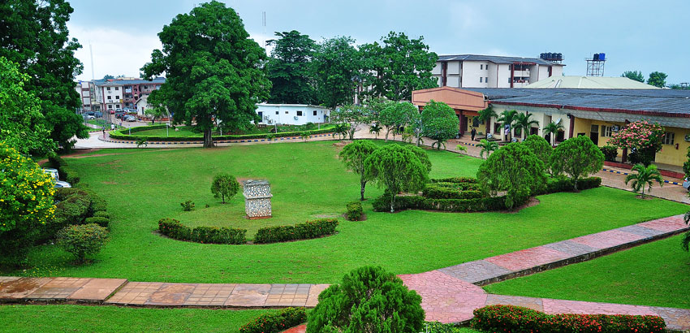

After the establishment of Church of God Mission in the 1960’s, Archbishop Benson Idahosa received specific directions from God to venture into the area of education, starting from Nursery education to the University level.
Transformation
Journey Step Future
Professionals
We are passionate about giving you the future you'll be proud of.With Over 30 programmes to accomodate your choice.

Why Study at Benson Idahosa University

Students enjoy a crisis- free campus environment, where they can peacefully achieve their academic pursuits. There are no cults or strikes on campus. Our student’s leadership programme i.e. the resident advisors, student chaplains, and more offer students leadership roles that help them develop their leadership and communication skills to succeed long after they graduate.
We have very conducive hostel accommodations, sporting facilities and sizeable lecture halls that conveniently accommodate all students.
Every student is exposed to trainings from some of the most renowned leadership institutes and knowledgeable men and women of great achievements. By this they are inspired and their perspective broadened on spiritual growth in Christ, leadership, wealth, creation, politics, entertainment and more. Every student is given equal opportunity to gain invaluable practical experience through special programmes, tasks, entrepreneurship attachments and internships with top-notch companies in their fields of interest to get them equipped for life after school. Students have opportunities to earn scholarships through diligent application in their academics, leadership responsibilities and extracurricular activities. All students, irrespective of course of study, receive training in enterpreneurship, administration, management, personal branding, proposal development, resume writing and communication, negotiation, and project management.
History of Benson Idahosa University

1960
1981
By 1981, the Vision of Christian Faith University (CFU), which was later renamed Benson Idahosa University, had matured in the mind of the Archbishop. But the actualization of the vision had to be suspended to provide room for the establishment of the highly reputable WORD OF FAITH GROUP OF SCHOOLS (Nursery, primary and secondary) in the 1980s
1992
In 1992, Archbishop Benson Idahosa applied to the Honourable Minister of Education for a licence to establish and operate a private University. Following this development, en expert team of Academics and Professionals was set up to prepare a feasibility report, an Academic Brief and develop a Master Plan for the proposed University. Operating as the institute of continuous learning (ICL), the proposed University organised academic and professional programs for young students.
1998
Christian Faith University became Benson Idahosa University and F.E.B Idahosa became the university’s second president
2002
In February 2002, ten years after the application to start a private University, the Federal Government, acting through the national Universities Commission (NUC), graciously granted Benson Idahosa University license to operate. The University started operating as a fully licensed institution in March 2002 with an initial student enrolment of 400, registered into two faculties (Faculty of Arts, Social Sciences,Education and Faculty of Basic and Applied Sciences).
2004
First Convocation
Benson Idahosa University’s first post accreditation annual convocation
News And Events
BIU Mobile App
This android app for students will enable the students do the following:
- view their school fees
- view the school calendar
- view lecture schedule/timetable
- Access the BIU Portal
2020/2021 Session
It is with great joy and boundless enthusiasm that I welcome all staff and students of this great university to the new academic session which begins today, 14 September 2020. Great joy because despite the delicate and deadly situation of the Covid-19 pandemic which has paralysed the world with fear and uncertainty...
NUC Approves New Academic Programmes For Benson Idahosa University.
The National Universities Commission, (NUC), has approved the commencement of two additional courses for Benson Idahosa University (BIU). The newly approved courses are Nursing Science and Medical Laboratory Science programmes...
Research
Faculties
Faculty Of Arts And Education
Welcome to the home of the Arts, and Education at Benson Idahosa University. We are engaged in teaching, research and service across a diverse range of areas.
Faculty Of Agriculture
The Mission of the Faculty of Agriculture is to develop human resources and technology to cater for contemporary and future needs of the agricultural sector.
Faculty Of Law
Choosing a law school is a complex and difficult task. It is important for you to find the right fit. Our law school works hard to offer you studies that are both sound and innovative.
Faculty Of Science
Our focus on excellence in teaching, learning and research produces graduates with the skills and knowledge to make a difference in society.
Faculty Of Social And Management Science
The commitment of the Social and management sciences is to teach leadership with a deep understanding of business. The approach combines fieldwork,with a strong emphasis on concepts and theory.
School of Postgraduate studies
Postgraduate study can be the foundation to a great career, it can turn an existing career into something brilliant, help you change careers or aid in pursuing your passion.
Faculty Of Engineering
Engineering Faculty is out strong.